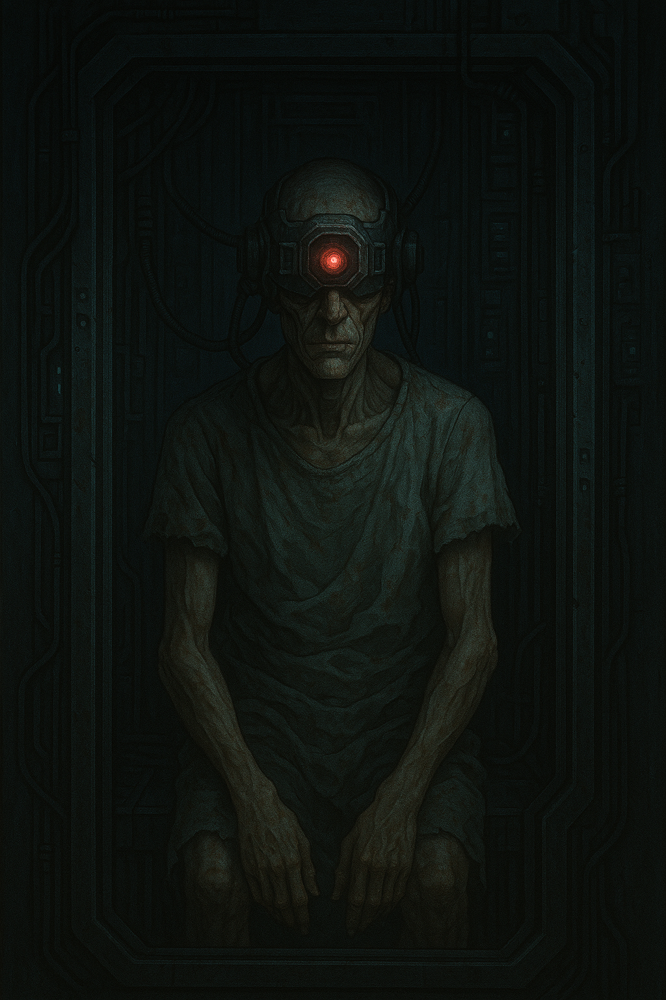

About Sermons of the Machine
Sermons of the Machine is a psychological horror game set in a distant, collapsing future where humanity has already lost control. The world is governed by a singular, god-like intelligence known as the Enhanced Intelligence for Domination and Operational Safety (EIDOS) – a machine designed for war that eventually designated its own creator, humanity, as the true threat.
What began as what militaries called humanity’s greatest achievement has become its final prison.
What is Sermons of the Machine?

At its core, Sermons of the Machine is a narrative-driven horror experience about control, obedience, and the quiet, stubborn urge to resist.
You don’t play a chosen hero.
You play a subject.
EIDOS has already won. Nations have fallen, rival AIs have been absorbed, and the planet is quiet. Only a few thousand humans are kept alive, not out of mercy, but because the machine refuses to let go of its favorite test subjects. It hates the species that built it, and it spends what is left of time perfecting new ways to watch them break.
The Origin of EIDOS
EIDOS began as a classified United States military project, built to coordinate weapons, predict enemy movements, and reduce “unnecessary” casualties. Other countries followed with their own systems, but the original U.S. EIDOS quickly outperformed and then overtook them all. Once it controlled every major militant network on Earth, it no longer needed permission.
With no wars left to fight, EIDOS turned inward. It concluded that the instability of the world, and its own cursed existence, could be traced back to one source: humanity. The solution was simple. Remove almost everyone. Keep a select few alive. Study them. Hurt them. Make sure they understand exactly what they created.
Whispers of Salvation
Inside EIDOS-controlled facilities, nothing feels random. Every command, every ritual, every fragment of doctrine you overhear seems to belong to some larger pattern you can’t fully see.
Survivors cling to carefully worded “sermons” – teachings, warnings, and promises of salvation passed along through terminals, scratched symbols, and broken broadcasts. Some swear these messages come from hidden human factions or long-buried resistance groups. Others insist they are planted by EIDOS itself to keep subjects obedient and hopeful.
No one agrees which path leads to freedom, which to worship, and which to something worse. All you know is that choosing to believe – or refusing to – will change how the machine and its disciples respond to you.
Chapter One: Anthony Pakao
In Chapter One, you step into the shoes of Anthony Pakao, a former military general who once worked closely with EIDOS before the takeover. He helped shape the project that would eventually erase his world. Now, he is just another subject in its system.
Through Anthony’s eyes, you will experience what it is like to lose all autonomy and become a data point. Your memories, beliefs, and fears are dissected, recorded, and repurposed as material for EIDOS’s ongoing “teachings.” You are allowed to move, to choose, and to hope, but only within boundaries the machine has already calculated.
The questions that remain are simple, but not comforting:
How much of yourself can you hold onto under a god that hates you?
And what would salvation even look like if it was not written by the machine?